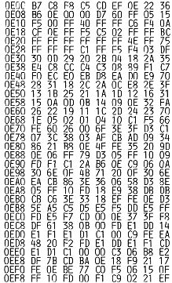
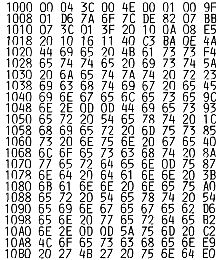

Nascom Journal |
Juni 1982 · Ausgabe 6 |
Ein Treiberprogramm für ein Schreibmaschineninterface wurde schon vor langer Zeit im Nascom Journal abgedruckt, allerdings für das T4 Betriebssystem. Hier nun ein Ansteuerprogramm für den Kanis-Drucker mit dem Nassys Monitor.
Das eigentliche Treiberprogramm finden Sie im Bereich E00 – EFF . Ab 1000 liegt ein Eingabeprogramm, das es gestattet, gleich in NASPEN zu starten, mit einer Bildschirmausgabe, die es jedem ermöglicht, sofort mit der Texteingabe zu beginnen. Das Eingabeprogramm sollte im Generate Format abgespeichert werden (G-Kommando E E00 1120 B806 bei Nassys 1). Vor dem Laden muß NASPEN kaltgestartet werden.
Das Treiberprogramm ist eine verbesserte Version. Einmal wird bei erneut gleichem Buchstaben eine Verzögerung vorgesehen (die Typenhebel verklemmen sonst manchmal bzw. der Typenhebel war noch nicht wieder so weit zurück, daß er erneut angesteuert werden konnte). Andererseits wurde die Shift- Setzen/Shift-Löschen-Verzögerung so geändert, daß sie bei jedem Wechsel wirksam wird.
Im Vergleich zur Quelle/Olivetti-Schreibmaschine lt. MC 3/82 schafft unsere alte Typenhebelmaschine mit 8 Zeichen netto pro Sekunde deutlich mehr als die Typenradmaschine mit 5 Z/sec, die man lt. MC sicherheitshalber einstellen soll. Da bleibt nur noch der Vorteil der Wechselmöglichkeit des Typenrades… Meine Wahl damals war rückwirkend offensichtlich nicht falsch, sie würde heute noch genauso ausfallen. Ein sauber schreibender Matrixdrucker kommt für mich immer noch einfach zu teuer.


| Seite 6 von 24 |
|---|